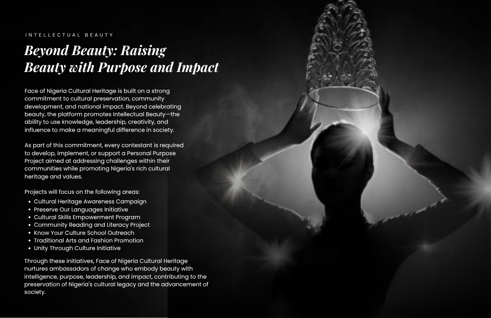

Face of Nigeria Cultural Heritage is more than a beauty pageant; it is a prestigious platform dedicated to promoting the rich cultural diversity, traditions, values, and heritage of Nigeria. It celebrates young women who embody intelligence, elegance, confidence, leadership, and a deep appreciation for cultural heritage.
It is a movement that empowers individuals to preserve and showcase Nigeria's unique customs, languages, fashion, arts, and traditions, while inspiring unity, national pride, and social impact. The platform represents beauty with purpose, intelligence, leadership, creativity, and cultural pride.
Nigeria is blessed with different ethnic groups, languages, traditional attire, dances, foods, and customs that make the nation unique and admired across the world. Face of Nigeria Cultural Heritage seeks to preserve and promote these cultural treasures while empowering young women to become ambassadors of unity, peace, tourism, and national development.
The queen represents the true beauty of Nigeria beyond physical appearance. She is confident, intelligent, elegant, culturally aware, and passionate about impacting society positively. Through cultural exhibitions, humanitarian projects, tourism promotion, and youth empowerment programs, the platform aims to inspire a new generation to value and protect Nigerian heritage.
Face of Nigeria Cultural Heritage also serves as a bridge connecting tradition with modern excellence. It encourages young people to embrace their roots, showcase their talents, and proudly represent Nigeria on both national and international stages.
Face of Nigeria Cultural Heritage is committed to celebrating and preserving the rich cultural diversity of Nigeria by empowering young women who embody intelligence, leadership, confidence, elegance, and cultural pride. The pageant promotes unity, creativity, education, and social impact while showcasing Nigeria's traditions, languages, fashion, arts, and values to the world.
To become Nigeria's leading cultural pageant platform dedicated to preserving heritage, promoting national unity, empowering youth, and inspiring future generations to value and represent the beauty of Nigerian culture with pride and excellence globally.
Promoting and protecting Nigeria's diverse traditions, customs, languages and heritage.
Encouraging honesty, discipline, responsibility and strong moral character.
Celebrating intelligence, education, creativity and informed leadership.
Inspiring young women to become confident leaders, role models and agents of positive change.
Fostering peace, love, tolerance and national unity among different ethnic groups in Nigeria.
Encouraging community development, charity and humanitarian impact.
